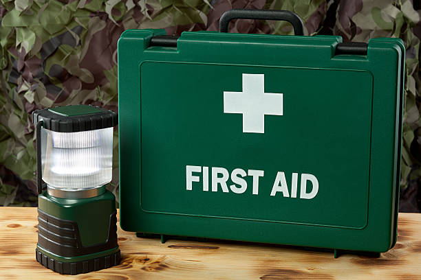

Fractures more_vert
IT IS A FRACTURE IF:
. Pain at or around the suspected area
. Tenderness, discomfort or general pressure around the area
. Swelling about the area
. Deformity of the limb
. Irregular look of the bone.
WHAT TO DO:
-Call for help from a medical personnel or help getting the victim to the closest hospital
- Do not attempt to live the person unless it is necessary to avoid further injury and harm
- Stop any bleeding by applying pressure to the wound with a clean sterile cloth
- Do not try to realign the bone or anything keep the fractured area immobile while waiting for medical help
- Apply ice packs to limit swelling and help relieve pain. Do not apply the ice packs directly on the skin. Wrap in a towel or piece of cloth
- If the person feels faint or is breathing in short rapid breaths, lay the person down with the head slightly lower than the upper part of the body, and if possible, elevate the legs.
Gunshot wounds more_vert
WHAT TO DO:
-Call for medical assistance immediately
-Pay attention to both entry and exit wounds
- Stop the bleeding by applying pressure to the wound’s opening with a towel, shirt or gauze
-Begin CPR if the patient is not breathing
-Apply tight bandage and continue adding pressure to the wound
-For wounds on the chest, seal the wound with a plastic to stop air being sucked into it and causing a collapsed lung
-Let patient stay in a position most comfortable to them and observe closely
- Don’t try to remove bullets still in the body as this may worsen internal damage and bleeding
- If they start to vomit or lose consciousness, turn them to their injured side to avoid blood drainage to the uninjured side due to gravity
Heart attack more_vert
WHAT TO DO:
If you think someone is having a heart attack;
-Have the person sit down rest and try to keep calm
-Loosen any tight clothing
-Ask if the person takes any chest pain medication and help the person take it
- If the pain does not go away in 3 minutes after resting and taking the chest pain medication, seek emergency medical help
-If the person is unconscious and unresponsive call for help and resume CPR
-DO NOT leave the person alone except to call for help of its necessary
-DO NOT allow the person convince you not to call for help
-DO NOT wait to see if the symptoms go away
-DO NOT give anything by mouth except a prescribed heart medication
Heatstroke more_vert
WHAT TO DO:
-Seek immediate medical attention
-Move the person out of the heat
-Remove excess clothing
-Cool them by placing them in a tub of cool water or with a cool shower spray
-Watch out for seizures, unconsciousness for linger than five minutes and difficulty in breathing
Hot pepper in eyes or on skin more_vert
WHAT TO DO:
-If you get pepper in your eyes, wash your hands thoroughly, soak a cotton ball in cold milk and place over the affected eye. You can also use for fingers for this
-For skin, rub alcohol on affected area, and then soak the skin in milk or another dairy product
-DO NOT use water as this spreads the pepper even further
Nose bleeds more_vert
WHAT TO DO:
-Firmly pinch the entire soft part of the nose just above the nostrils
-Sit and lean forward
-Breathe through your mouth
-Hold this position for 5 minutes
-If bleeding continues, hold the position for another 10 minutes

Object in ear more_vert
WHAT TO DO:
-Do not probe the ear with a tool
-Try removing the object if visible
-Tilt the head to the affected side to try and dislodge the object
-If it's an insect, tilt the head in the opposite direction, pour in olive oil, baby oil or mineral oil to float the insect out
-Oil should be warm but not hot
-Do not use oil if it isn't an insect
-Try washing the object out using ear syringe and warm water to irrigate the ear
-If these fail and or there is discharge or blood and continuous pain in the ear, SEEK MEDICAL ATTENTION
Seizuresmore_vert
WHAT TO DO:
-Most seizures end in a few minutes. If there's difficulty in breathing or succession in the seizures please seek immediate medical attention for the victim
-If not, stay with the person until the seizure ends and the person is fully awake. After, help the person to a safe place and communicate in simple terms what has happened
-Ease the person to the floor
-Gently turn the person to one side to help them breathe
-DO NOT try to hold the person down to stop their movements
-Clear the area around from anything sharp and prevent injury
-Put something flat and soft like a folded cloth under their head
-Remove glasses; loosen ties or any restricting clothing that might make it hard to breathe
-DO NOT put anything in the person's mouth, this can damage their jaw
-DO NOT try to give mouth to mouth/CPR the person will start breathing in their own soon enough
-DO NOT offer the person food or water until the person is conscious enough
-Comfort the person and speak calmly
-Check to see if there are any drugs or medical information in the person's belongings to deal with such emergency
-Keep yourself and everyone around calm
-Make sure the person gets home safely
Snake bite more_vert
WHAT TO DO:
Most snakes are not venomous or dangerous. If you suspect you've been bitten by a venomous snake, especially if the bitten area changes colour, begins to swell or is painful, seek immediate medical attention. While waiting;
-Remain still and calm to help slow the spread of the venom
-Remove Jewelry and tight clothing
-Position yourself so the bite is below the level of your heart
-Clean the wound with soap and water
-DO NOT apply ice
-DO NOT cut the wound or attempt to remove the venom
-DO NOT drink caffeine or alcohol this could speed up your body's absorption process
-Try to remember the colour of the snake for identification by medical personnel

Sprains more_vert
WHAT TO DO:
-Rest
-Ice
-Compression
-Elevation
-For a severe sprain or strain please seek medical attention